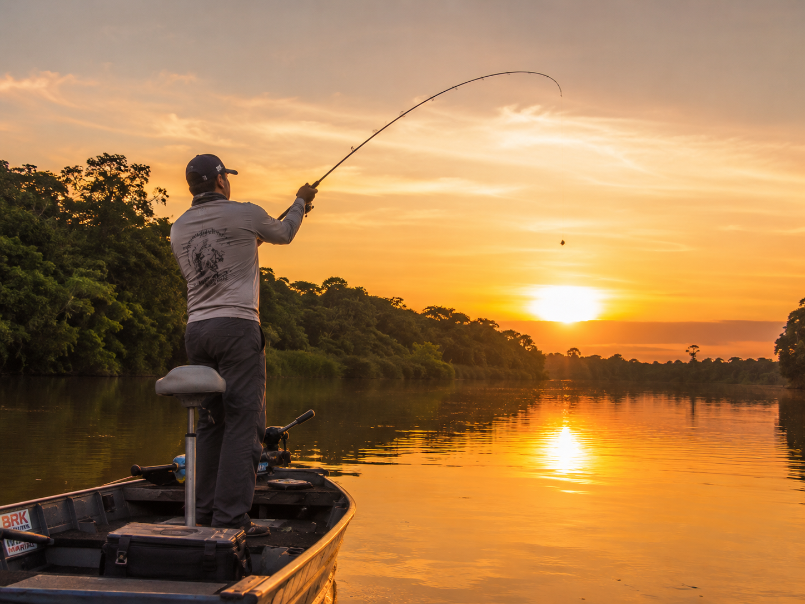

Dicas para Iniciantes
Confira orientações essenciais sobre equipamentos e técnicas para quem está começando.
Descubra o mundo da pesca esportiva, dicas, espécies e os melhores destinos para a prática desse esporte em harmonia com a natureza.
A pesca esportiva é muito mais do que lançar a linha na água. É uma prática que combina paciência, técnica, respeito à natureza e a emoção de um bom combate com o peixe.

Além do contato direto com a natureza, a pesca esportiva oferece benefícios como relaxamento, concentração e a oportunidade de criar laços com amigos e familiares. Diferente da pesca comercial, o foco está no desafio e na preservação, com a prática do pesque e solte.
A pesca esportiva pode ser praticada em água doce ou salgada, com diferentes técnicas e equipamentos.
Confira orientações essenciais sobre equipamentos e técnicas para quem está começando.
| Mês | Evento | Local |
|---|---|---|
| Janeiro | Abertura da Temporada | Rio Paraná |
| Março | Desafio do Tucunaré | Represa de Furnas |
| Junho | Campeonato de Pesca de Praia | Litoral de São Paulo |